Vision-Language-Action (VLA) policies often rely
strongly on the camera viewpoints seen during training, causing
substantial performance degradation when deployed from un-
seen perspectives. Collecting demonstrations from sufficiently
diverse physical viewpoints is expensive and still provides
only sparse coverage of the viewpoint space. We introduce
InfiNoVA, a data-augmentation framework that converts syn-
chronized multi-camera demonstrations into a dense distri-
bution of geometrically consistent training views. InfiNoVA
reconstructs each manipulation trajectory as a time-varying 3D
Gaussian representation and renders novel observations from
sampled camera poses while preserving the original state–action
correspondence. This explicit scene representation improves
frame-level fidelity and temporal consistency while reducing
task-critical hallucinations observed in generative novel-view
synthesis. Across four real-world manipulation tasks, policies
trained with InfiNoVA achieve 5.4× higher average success
under unseen randomized viewpoints than both VISTA-based
augmentation and the unaugmented policy. InfiNoVA further
achieves 1.7× higher success than training directly on all
five physical camera views. These results show that dense,
geometrically grounded viewpoint augmentation provides a
practical route toward camera-robust robot policies without
modifying the underlying policy architecture.
Method
InfiNoVA takes synchronized multi-camera robot demonstrations and
reconstructs each manipulation trajectory as a time-varying 3D
Gaussian scene representation. From this explicit geometric model,
new camera viewpoints are sampled and rendered into additional
training observations, while the original state–action labels
from the demonstration are preserved unchanged. Because rendering is
grounded in explicit 3D geometry rather than generative synthesis,
the resulting views maintain high frame-level fidelity and temporal
consistency, avoiding the task-relevant hallucinations that can
arise from purely generative view-synthesis approaches. The
resulting dense set of geometrically consistent viewpoints is then
used to train policies that are more robust to unseen camera
placements at deployment time.
Rendering Quality
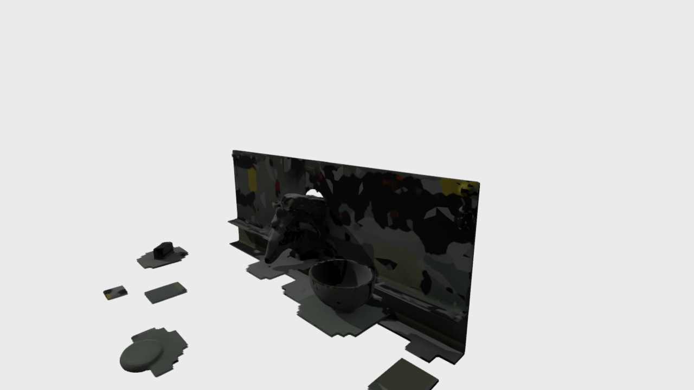
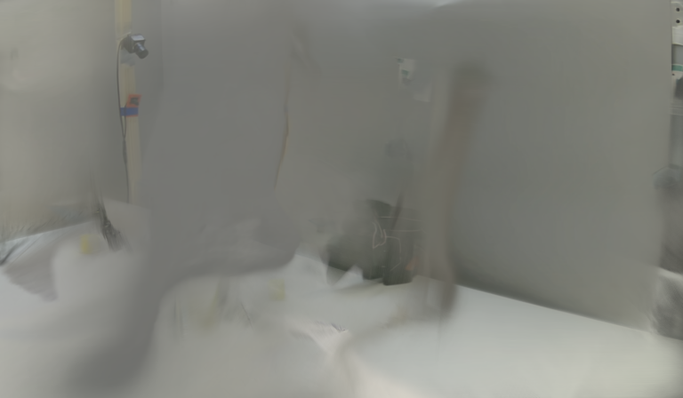
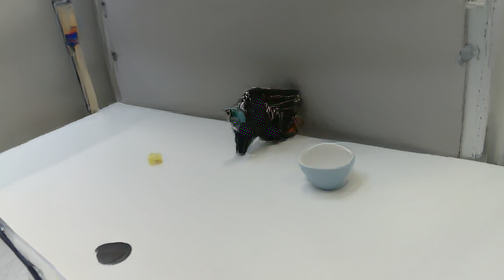
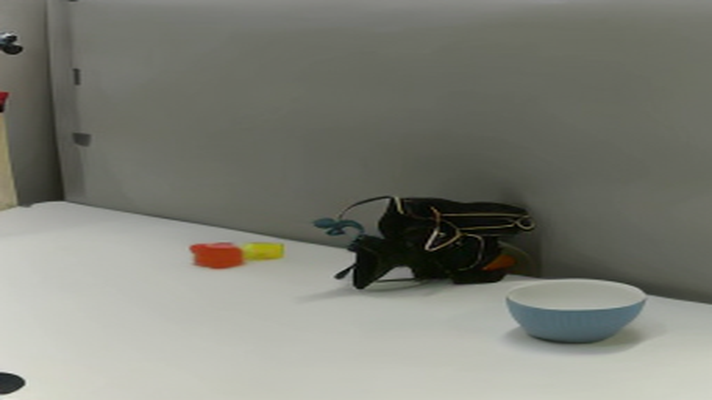
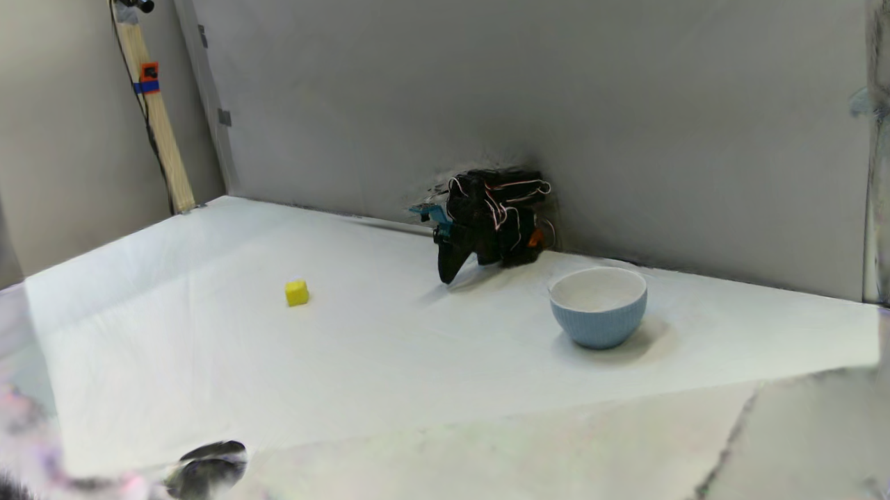
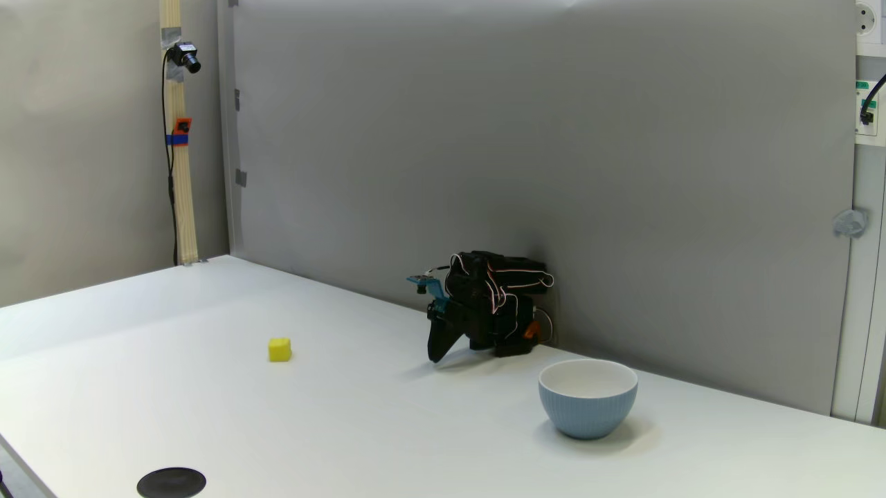
Drag any divider to reveal Hunyuan, DepthSplat, GLD, VISTA, InfiNoVA, and Ground Truth side by side in a single frame.
Hunyuan
GT
Hunyuan
DepthSplat
GT
DepthSplat
GLD
GT
GLD
VISTA
GT
VISTA
InfiNoVA
GT
InfiNoVA (Ours)
Compared to generative and depth-based baselines such as Hunyuan,
DepthSplat, GLD, and VISTA, novel views rendered by InfiNoVA show
noticeably higher frame-level fidelity to the ground-truth
observation, with sharper object boundaries and fewer structural
artifacts around the robot arm and manipulated objects. Several
baselines introduce visible hallucinations or geometric distortion
in task-relevant regions when rendering from a shifted viewpoint,
which is especially problematic since these are exactly the
regions a downstream policy must attend to. Because InfiNoVA
renders from an explicit, time-varying 3D Gaussian reconstruction
of the scene rather than synthesizing pixels generatively, it
better preserves scene geometry and temporal consistency across
frames, which is consistent with the substantially higher
downstream policy success rates reported for InfiNoVA-augmented
training data.
Rendering time is also an important practical consideration for
scaling augmentation to large demonstration datasets. GLD produces
visually competitive renderings but is substantially slower to
render than InfiNoVA, making it considerably less practical for
generating the large volume of synthetic viewpoints required for
policy training. InfiNoVA's explicit 3D Gaussian representation
allows novel views to be rendered efficiently, making it a more
scalable choice for producing dense viewpoint augmentation across
full demonstration datasets.
GLDVISTAInfiNoVA
Novel-view synthesis time comparison, in seconds (reconstruction + rendering); log scale.
Novel-view synthesis time comparison, in seconds (reconstruction + rendering).
Task
GLD
VISTA
InfiNoVA
Pick-and-Place
25615
1115
318
Sweep
35119
1529
437
Sort
39026
1693
434
Stack
45056
1961
560
Average / episode
36204
1575
437
Averaged across tasks, InfiNoVA is approximately 3.6× faster
than VISTA and 82.8× faster than GLD, while also providing
higher rendering fidelity and temporal consistency, making it the
strongest quality–efficiency trade-off among the evaluated
methods.
A further practical limitation of DepthSplat and GLD is that both
are pose-dependent methods, requiring an explicit target camera
pose as input to condition the rendering process. In contrast,
InfiNoVA, along with Hunyuan and VISTA, is pose-free, directly
synthesizing novel views without requiring the target viewpoint to
be known or specified beforehand. This pose-free property makes
InfiNoVA better suited to augmentation pipelines where diverse
novel viewpoints must be generated without manually specifying
camera poses for every rendered view.
Novel View Rendering
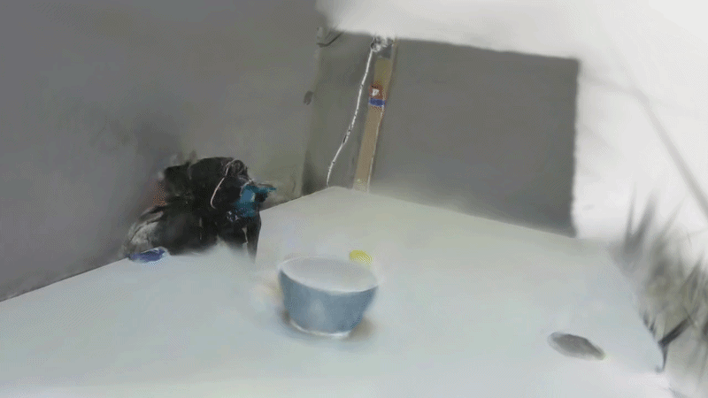
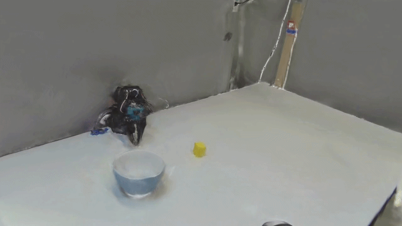
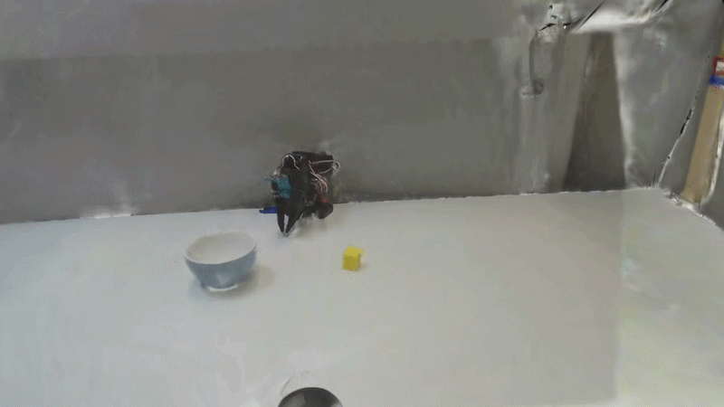
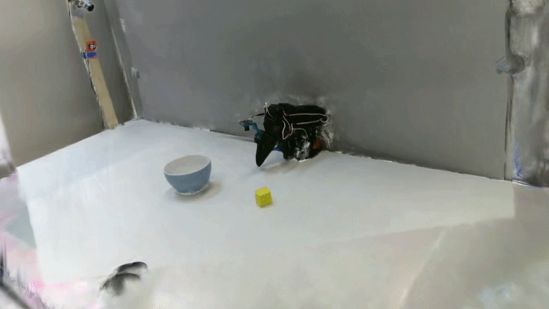
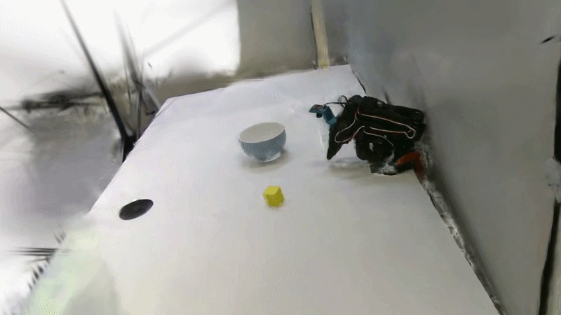
Each clip above shows the same manipulation trajectory rendered
from a different camera viewpoint using InfiNoVA's 3D Gaussian
scene representation. The robot, objects, and motion stay sharp
and consistent across all viewpoints, even ones never seen by a
physical camera during data collection. This shows that the
rendered views are realistic and reliable enough to be used as
additional training data for the robot's policy.
Robot Experiments
Base policy on Training view
Base policy on Random test view
When the SmolVLA policy is trained on a single fixed camera
viewpoint, it performs well on a pick-and-place task as long as it
is evaluated from that same training viewpoint. However, when the
camera is moved to a randomized test viewpoint not seen during
training, the same policy fails horribly, highlighting how
sensitive standard VLA policies are to the camera viewpoint used
at test time.
Base policy
VISTA policy
InfiNoVA policy
Random view 1
Random view 2
Across both randomized viewpoints, the base policy and the
policy trained on VISTA-augmented data exhibit severe degradation
in task success, frequently failing to localize or grasp the target
object once the camera pose deviates from the training
distribution. This indicates that both baselines overfit to the
specific viewpoint statistics seen during training rather than
learning a viewpoint-invariant visuomotor representation. In
contrast, the policy trained on InfiNoVA-augmented data maintains
substantially higher task success across both unseen
viewpoints, demonstrating improved generalization to out-of-
distribution camera poses. These results suggest that augmenting
training data with geometrically consistent novel views induces a
policy representation that is considerably more robust to
viewpoint shift at deployment time.
Pick&Place
Stack
Sweep
Sort
We further evaluate policies trained on InfiNoVA-augmented data
across four distinct manipulation tasks: Pick&Place, Stack,
Sweep, and Sort. In each case, the InfiNoVA policy continues to
perform well even when the evaluation camera pose is randomized,
substantially outperforming the baseline and VISTA-augmented
policies under the same viewpoint shift. Quantitative success
rates for all four tasks are reported in the Results section below.
Results
For each of the four manipulation tasks, we evaluate every policy
over 100 episodes with the test-time camera pose randomized on
each episode, and report the resulting task success rate.
We evaluate InfiNoVA across four real-world manipulation tasks,
measuring policy success rate under unseen, randomized camera
viewpoints at test time. Policies trained with InfiNoVA achieve
5.4× higher average success under these unseen viewpoints
compared to both VISTA-based augmentation and an unaugmented
baseline policy.
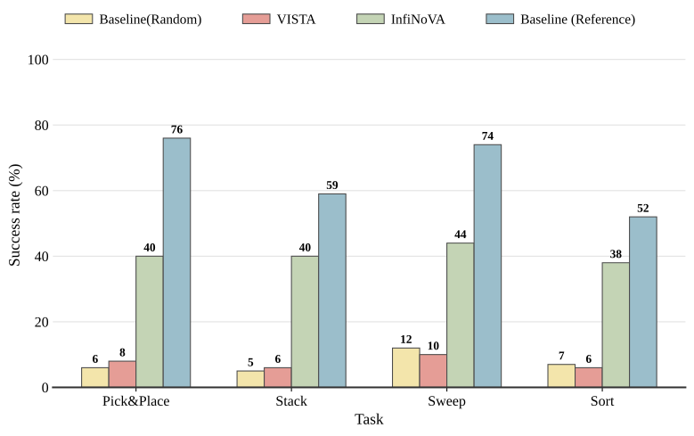
Across all four tasks, the unaugmented baseline and the
VISTA-augmented policy both collapse under randomized viewpoints,
achieving only 5–12% success, well below the reference success
rate obtained when the baseline is instead evaluated from its
original training viewpoint (52–76%). This confirms that the
failure under viewpoint shift is not due to task difficulty, but to
poor generalization across camera poses. The policy trained on
InfiNoVA-augmented data is far more robust to this shift, reaching
38–44% success across Pick&Place, Stack, Sweep, and Sort,
consistently several times higher than both baselines under the
same randomized-viewpoint evaluation.
Notably, InfiNoVA also outperforms policies trained directly on
all five physical camera views, achieving 1.7× higher success,
showing that dense, geometrically consistent synthetic viewpoints
can be more effective than simply collecting more real camera
coverage.